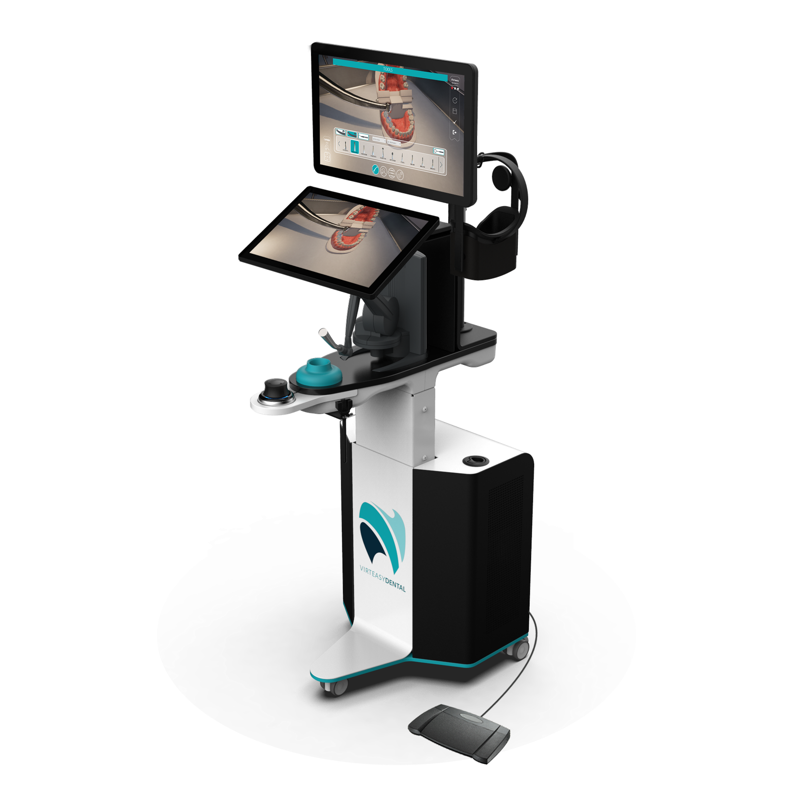
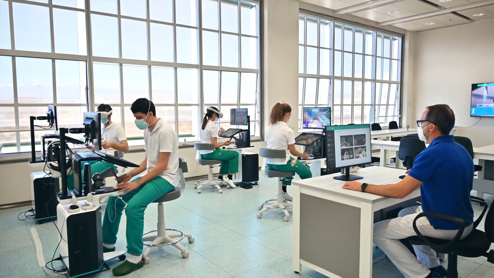
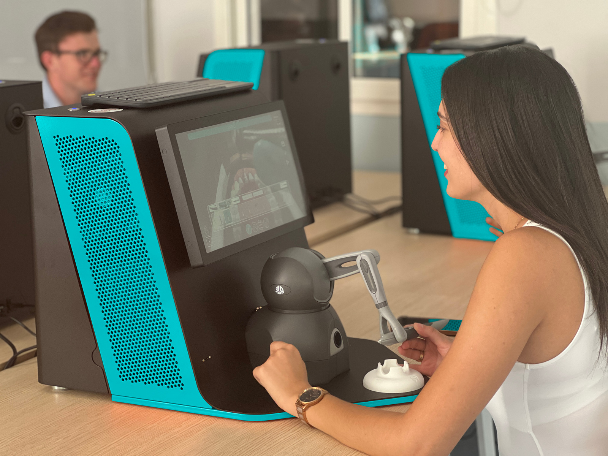
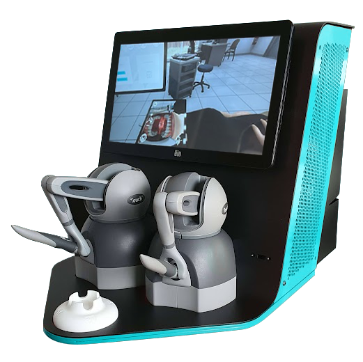
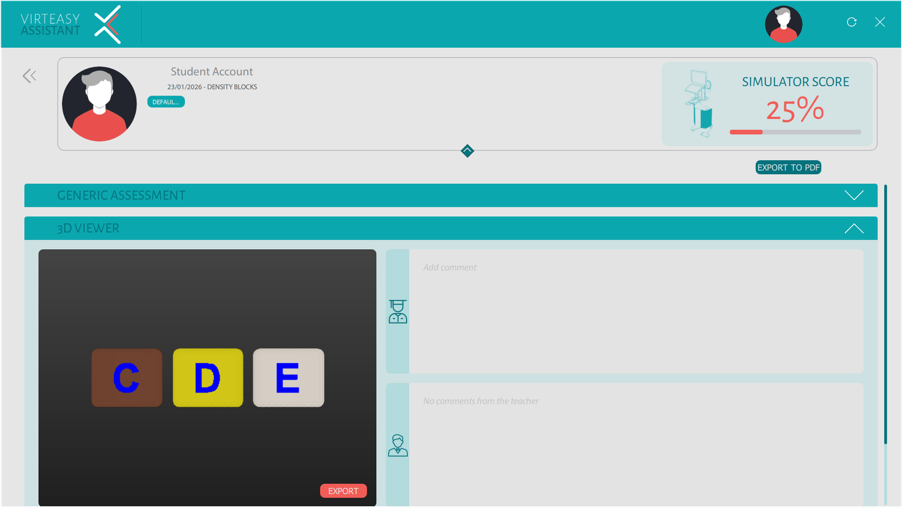
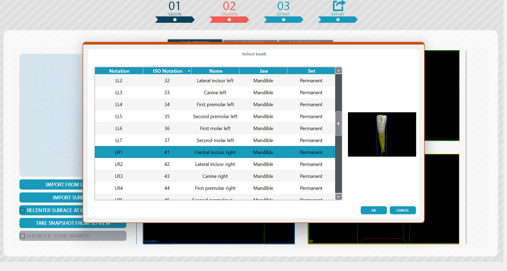
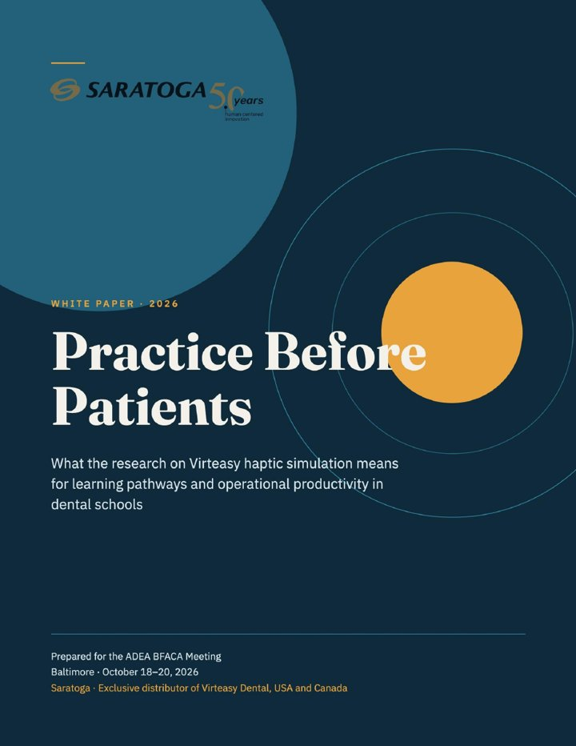

Dixon et al., 2021 · Eur J Dent Educ
Feedback compared with clinical teachers
Virteasy feedback on one operative exercise was compared with teachers' judgements, as a proof of concept for task-specific feedback.
Read the study (new tab)Virteasy haptic simulators let dental students practise real procedures and feel the instrument push back. Repeat a preparation as often as needed, then review it with faculty.

Configurations: PRO workstation and compact Desktop
Maximum haptic force on PRO (3.3 N on Desktop)
Participants in a published study of user perceptions
Saratoga in dentistry, exclusive Virteasy distributor in 12 countries


How a session runs
Choose the task and the technique students will practise.
The haptic device gives force feedback as they work the virtual instrument.
Exercise feedback sits next to the student's own self-assessment.
Teachers agree what to repeat and check it in physical practice.
Two configurations
Both run the same core preclinical exercises and faculty software. PRO adds an integrated workstation and specialist applications.
Integrated workstation
A height-adjustable station for core operative practice and specialist teaching, from implantology to micro-endodontics.

Compact desktop unit
A self-contained touchscreen unit for core preclinical practice that sits on a standard desk or bench.
| Feature | PRO | Desktop |
|---|---|---|
| Format | Height-adjustable workstation | Compact desktop unit |
| Displays | Two screens | Touchscreen |
| Max haptic force | 7.9 N | 3.3 N |
| Mirror practice | Separate tracked mirror | With the two-device version |
| Specialist applications | Implantology and micro-endodontics | Core preclinical applications |
| Faculty software | Assistant and Editor | Assistant and Editor |
| Immersive VR | Optional | Optional |
Modules, VR hardware and software options depend on the package. Saratoga confirms the current configuration in the proposal.
Faculty tools
Run the classroom from one desk and build cases around what you already teach.

Example interface. Features depend on the supplied version.

Case preparation may need extra processing and specialist input.
Published research
Each study covers a specific task or setting. They give your faculty a starting point for its own evaluation.
Dixon et al., 2021 · Eur J Dent Educ
Virteasy feedback on one operative exercise was compared with teachers' judgements, as a proof of concept for task-specific feedback.
Read the study (new tab)Fernández-Sagredo et al., 2020 · FEM
A descriptive study reported positive perceptions of Virteasy. It measured perceptions, not learning gains.
Read the study (new tab)University of Turin · Int Endod J
A case report describes virtual rehearsal on Virteasy before a supervised procedure. It shows a specialist workflow.
Read the case report (new tab)Simulation complements physical and clinical teaching. Findings apply to the tasks and settings studied.

Free white paper
What the research on Virteasy haptic simulation means for learning pathways and productivity in dental schools, including the results that were not favourable.
Questions
PRO is an adjustable workstation with two screens and specialist implantology and micro-endodontic applications. Desktop is a compact touchscreen unit for core preclinical practice, with one or two haptic devices. A good starting point is one course: the demo helps match the format to it.
No. Virtual exercises sit alongside physical lab work and supervised clinical teaching. Faculty choose the tasks, set the criteria and decide how to assess progress.
No. Both configurations work on screen, with an optional immersive VR setup. Headset compatibility is confirmed in the proposal.
Yes, with Virteasy Editor, from supported scans and models. Some cases need segmentation and specialist input.
The proposal covers equipment, network, teacher station or server, faculty training, updates and service. Saratoga works this through with your academic, lab and IT teams.
Book an academic demo built around one of your exercises. We bring the simulator, you bring the teaching goal.
Where we work
Saratoga is the exclusive Virteasy distributor in these countries. Contact us for demos, proposals and support in any of them.